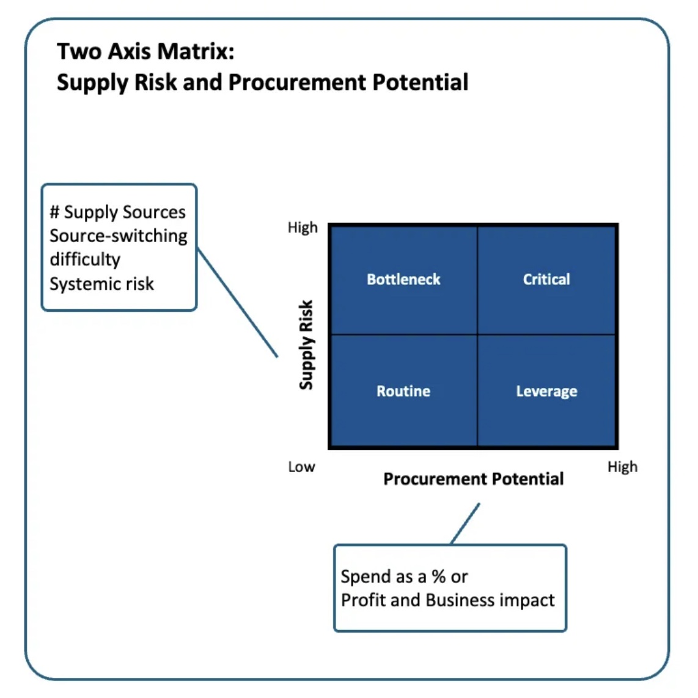
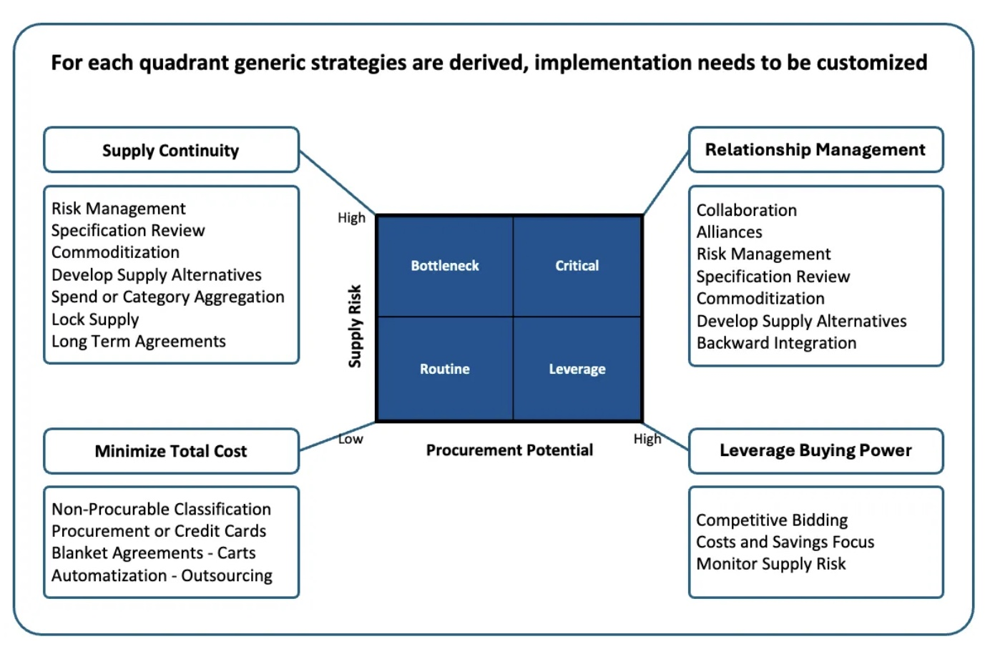

One thing is for sure in Procurement: You will have less resources than you need, and little time for decision-making.
Either if you are an individual contributor or a CPO, you will need to set or check priorities, manage risk and apply strategies in a timely manner.
Published in Harvard Business Review — 1983, the Kraljic matrix is a Easy-to-apply spend or category classification framework.
It has two Axis: one measures Supply Risk and the other Procurement Potential measured as Spend or Profit.

The key factor lies in Supply Risk, for each SKU or homogeneous category:
Number of Supply Sources is the first measure, a higher number of supply sources is generally related with lower supply risk, as diversification helps to balance the likelihood of failure within the supplier base.
Supply-switching difficulty can be generated by external limitation, i.e. government approvals or internal R&D approval. Sometimes internal limitations are due to the status quo attachment, notably this type of risk avoidance culture can generate risk within the supply chain. Testing, approving and finally adding a supplier also represent a cost, which needs to be balance with the lower risk of a diversified supplier base.
The systemic risk is a complex aspect. Diversification in two or more suppliers can produce the same supply risk than a single source. Suppliers can share the same key upstream supplier base, being in the same geographic area or use a freight lane that is exposed to the same choke point.
Basic Strategies

The combination of Supply Risk and Procurement Potential generates for quadrants with different Basic strategies.
For Bottleneck the main strategy is Supply Continuity, where to develop supply alternatives, either with active market research or by working in the specification or eventually commoditizing the item. Spend or Category aggregation is a tool to increase procurement potential and eventually more supply sources. Last resort are to lock supply or a long term supply agreement in order to get a more safe supply assurance.
The Critical area shares the specification review and commoditization, but its big procurement potential allows a bigger toolbox: Collaboration and Alliances, with a closer long term relationship are key to the overarching strategy of Relationship Management. At last vertical integration evaluation, as the big spend may make it economically possible.
The Leverage area is where to increase competition to get the easy implement cost reductions.
And at last Routine, where the first degree action is to challenge if it is really procurable spend. And focus in reduction or elimination of the transactional costs using automatization tools.
Conclusion
The Procurement View — Kraljic Matrix can help to map Supply Risks, set or check Priorities and establish basic Strategies in an process that can be straightforward applied for an SKU, a Category or the total 3rd party spend of an organization.